去掉了那缕"头发"。符干顶端右侧那道旗，现在是一个 D 形环——它站在旗的位置上，同时是字母 P 的肚子。 竖干既是符干也是 P 的竖笔，斜椭圆符头既是符头也是笔画收尾的重量。不画人，也不靠比喻：认不出 P 的人，看到的仍是一个干净的音符。
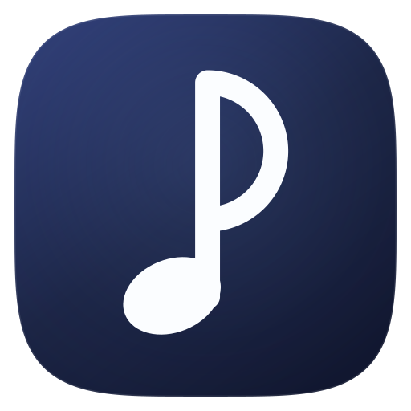
P 指向 Producer。VOCALOID / 歌声合成圈里，写歌的人叫 P 主；产品名 SXSEditor 的首字母也是 S / P 音系。这一层含义对圈内人是会心一笑，对圈外人只是一个好看的 P 形音符。
三种做法只在"环"的处理上不同：环宽、是否留白、是否一笔画成。都在下方按真实尺寸排了阶梯，请按 16px 的表现来选，而不是按 1024 的表现。
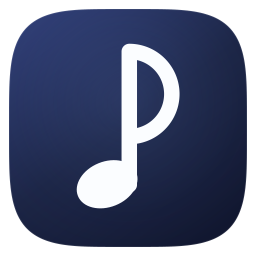
一笔画成：符干直上，到顶后绕成右半圆，再落回符干中线。笔画粗细处处相等，16px 下也不会断。
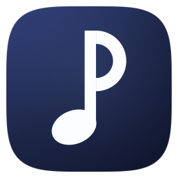
实心 D 环，环宽 70。最稳、最像排版字体里的 P，远看识别率最高。
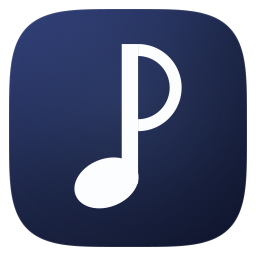
细环，环宽 44。最轻、最线性，接近当代工具类产品的图标语言。
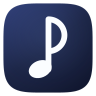
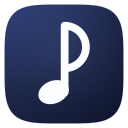
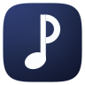
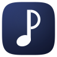
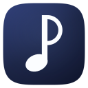
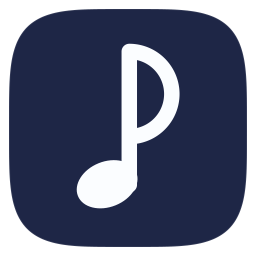
Ink 纯扁平单色底，最安静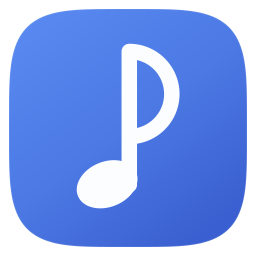
Brand 亮蓝底，任务栏里最容易找到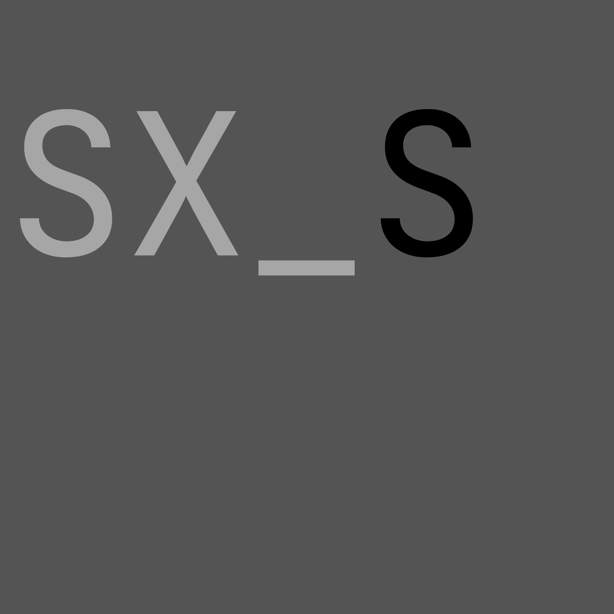
assets/icons/candidates/ 里，
assets/SXS.png / .ico 与文档站的 favicon 仍是原来的图标，安装包、窗口、文档站都没有改动。
等你从 Line / Solid / Ring 里挑一个（或者指出要改的地方，比如环再小一点、符头再斜一点、竖干再长一点），
我再把它落到正式路径并重新打包 ico / icns。